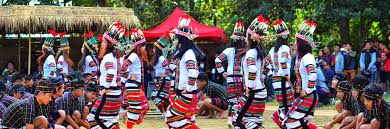

Nestled in the northeastern corner of India, Mizoram is a state of serene beauty, steeped in rich cultural heritage and vibrant traditions. Here's an overview of what makes Mizoram a captivating destination:
Mizoram is adorned with verdant hills, dense forests, and picturesque valleys, offering breathtaking views at every turn. Explore the lush greenery of the state's wildlife sanctuaries and national parks, such as Dampa Tiger Reserve and Murlen National Park, where diverse flora and fauna thrive in their natural habitats. Marvel at the mesmerizing beauty of Vantawng Falls, one of the highest waterfalls in Mizoram, and soak in the tranquility of Palak Lake, surrounded by rolling hills and lush greenery.
Immerse yourself in the vibrant cultural tapestry of Mizoram, characterized by its indigenous tribes and colorful festivals. Experience the joyous celebrations of festivals like Chapchar Kut, Mim Kut, and Pawl Kut, where traditional music, dance, and rituals take center stage.
Witness the traditional craftsmanship of Mizoram, including intricate handloom weaving, bamboo and cane crafts, and pottery. Explore local markets and handicraft centers to admire and purchase authentic Mizo handicrafts, such as Puan fabric and bamboo products.
Explore the architectural marvels of Mizoram, which reflect the state's unique blend of tradition and modernity. Visit the historic town of Aizawl, where colonial-era buildings stand alongside modern structures, and marvel at the intricate designs of traditional Mizo houses, known as 'Zawlbuks.'
Discover the sacred sites of Mizoram, including the revered Solomon's Temple in Aizawl and the picturesque Tamdil Lake, surrounded by lush forests and rolling hills.
Mizoram is home to several indigenous tribes, including the Mizo, Hmar, and Lushai, each with its own distinct culture, language, and traditions. Explore traditional villages like Reiek and Sialsuk to experience the warm hospitality and unique way of life preserved by these communities.
Engage with local artisans and craftsmen to learn about traditional crafts such as bamboo weaving, handloom weaving, and wood carving, and support their livelihoods by purchasing authentic handmade souvenirs.
Embark on thrilling adventures amidst Mizoram's natural wonders. Trek through dense forests, explore limestone caves like Pukzing Cave and Kungawrhi Puk, or indulge in adrenaline-pumping activities like rock climbing and rappelling.
Experience eco-tourism initiatives like the Tawi Wildlife Sanctuary and Ngengpui Wildlife Sanctuary, where sustainable tourism practices promote conservation efforts while offering unique experiences to visitors.
Whether you seek serene natural landscapes, immersive cultural experiences, or thrilling adventures, Mizoram offers a diverse range of experiences for every traveler. Plan your journey to this enchanting state and immerse yourself in the beauty and culture of Mizoram. Experience Mizoram – Where Serenity Meets Culture! 